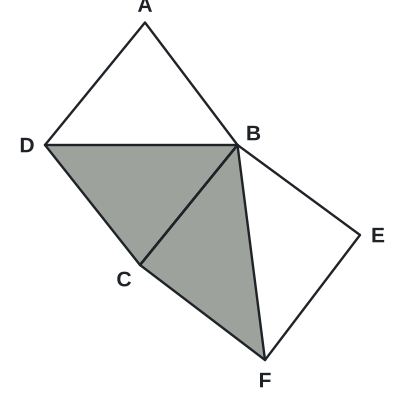
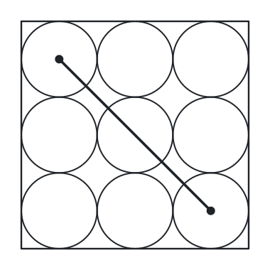

התשובה הסופית4תשובה (4)אף אחת מהתשובות אינה נכונה בהכרח
דרך הפתרון והסבר
נפענח את הנתונים:x · y < 0: ל־x ול־y סימנים שונים – אחד חיובי ואחד שלילי.|x| − |y| > 0: |x| > |y|, כלומר x רחוק יותר מ־0.יש שני מקרים, ונבדוק בכל אחד את הטענות.מקרה א: x חיובי, y שלילי. דוגמה: x = 3, y = −1.x − y = 4 > 0, ו־x + y = 2 > 0.מקרה ב: x שלילי, y חיובי. דוגמה: x = −3, y = 1.x − y = −4 < 0, ו־x + y = −2 < 0.נבדוק כל טענה בשני המקרים:(1) x − y > 0 – נכון במקרה א, לא נכון במקרה ב ✗(2) x + y < 0 – לא נכון במקרה א ✗(3) x − y < 0 – לא נכון במקרה א ✗אף טענה לא נכונה בשני המקרים: התשובה (4).
💡 הלקח
מכפלה שלילית = סימנים שונים. בודקים את שני המקרים לפני שקובעים "בהכרח".
🔁 דפוס חוזר: ערך מוחלט|x| הוא המרחק של x מ־0. |x| = k ⇒ x = k או x = −k.
מוקשים נפוצים
לבדוק את שני המקרים (x חיובי ו־x שלילי) לפני שמכריזים על טענה כנכונה בהכרח.
🔁 דפוס חוזר: הפרש ריבועיםa² − b² = (a − b)(a + b) – לא מחשבים כל ריבוע לחוד.
🔁 דפוס חוזר: שורשים מפשטים שורשים, מעריכים אותם בין ריבועים שלמים, ושורש במכנה מעבירים למונה.
מוקשים נפוצים
מכפילים בצמוד של המכנה (√5 + 1), כדי שבמכנה יתקבל הפרש ריבועים בלי שורש.
נבדקהפתרון תואם את מפתח התשובות של הספר.
שאלה 3

בסרטוט שלפניכם מעוין ABCD וריבוע BCEF. היקף הצורה שנוצרה הוא 54 ס"מ. נתון: מרחק הנקודה D מהצלע BC הוא 6 ס"מ.
מה גודל השטח הכהה (בסמ"ר)?
הצגת הפתרון
התשובה הסופית3תשובה (3)67.5
דרך הפתרון והסבר
במעוין כל הצלעות שוות, ובריבוע כל הצלעות שוות. הם חולקים את הצלע BC, ולכן כל הצלעות שוות. נסמן את אורכן s.ההיקף של הצורה כולה: הצלע המשותפת BC נמצאת בפנים ולא נספרת.צלעות ההיקף: AB, AD, DC (מהמעוין) ו־BE, EF, FC (מהריבוע) – 6 צלעות.6s = 54 ⇒ s = 9המשולש DBC הוא חצי מעוין (האלכסון DB חוצה אותו).הבסיס BC = 9, והגובה – המרחק של D מ־BC – הוא 6.שטחו: 12 · 9 · 6 = 27המשולש BCF הוא חצי ריבוע (האלכסון BF חוצה אותו).שטח הריבוע 9² = 81, ולכן שטח המשולש 812 = 40.5השטח הכהה:27 + 40.5 = 67.5 סמ"ר
💡 הלקח
היקף צורה מורכבת – הצלע המשותפת לא נספרת. שטח מעוין = צלע × גובה.
🔁 דפוס חוזר: הפרש ריבועיםa² − b² = (a − b)(a + b) – לא מחשבים כל ריבוע לחוד.
מוקשים נפוצים
4 − x ו־x − 4 שונים בסימן – הצמצום משאיר מינוס.
נבדקהפתרון תואם את מפתח התשובות של הספר.
שאלה 5
בסרטוט שלפניכם שני חצאי מעגל החסומים במלבן.
עמית ואורי יצאו, באותו הזמן, לריצה מהנקודה A. עמית רץ לאורך חצאי המעגל, מהנקודה A אל הנקודה C וחזרה לנקודה A. אורי רץ מהנקודה A לאורך היקפו של המלבן עד להשלמת סיבוב שלם וחזרה לנקודה A.
בהנחה שמהירויותיהם של עמית ואורי שוות, מי מהם סיים ראשון את ריצתו?
הצגת הפתרון
התשובה הסופית2תשובה (2)אורי
דרך הפתרון והסבר
נסמן את קוטר כל חצי מעגל ב־d.המלבן: A, B ו־C על הקו האמצעי, ושני חצאי המעגל צמודים זה לזה.אורך המלבן: AC = 2d. גובהו: d (חצי מעגל למטה ברדיוס d2 וחצי מעגל למעלה ברדיוס d2).המסלול של עמית: מ־A ל־C על שני חצאי המעגל, וחזרה באותה דרך.אורך חצי מעגל: πd2. שניים: πd.הלוך ושוב: 2πd ≈ 6.28dהמסלול של אורי: היקף המלבן.2 · (2d + d) = 6d6d < 6.28d, ולכן אורי עבר מרחק קצר יותר.באותה מהירות, אורי סיים ראשון.
💡 הלקח
היקף חצאי מעגלים מול היקף מלבן – π ≈ 3.14 לעומת 3: מי שמשתמש ב־π עובר יותר.
🔁 דפוס חוזר: תנועה דרך = מהירות × זמן. זה לקראת זה – מחברים מהירויות; באותו כיוון – מחסירים.
🔁 דפוס חוזר: מעגלים חסומים ומשיקים מבטאים הכול ברדיוס. רדיוס לנקודת השקה ניצב למשיק. 📐 לדף הנוסחאות
מוקשים נפוצים
עמית רץ הלוך ושוב – לא לשכוח להכפיל ב־2.
נבדקהפתרון תואם את מפתח התשובות של הספר.
שאלה 6
נתון: 9x2 + 27x3 + 243x5 = 3|x|
x = ?
הצגת הפתרון
התשובה הסופית2תשובה (2)−½
דרך הפתרון והסבר
נכתוב כל בסיס כחזקה של 3:9 = 3², ולכן 9x2 = 32 · x2 = 3x27 = 3³, ולכן 27x3 = 3x243 = 3⁵, ולכן 243x5 = 3xאגף שמאל:3x + 3x + 3x =3 · 3x =3x + 1המשוואה:3x + 1 = 3|x| ⇒ x + 1 = |x|אם x ≥ 0: x + 1 = x – אין פתרון.אם x < 0: |x| = −x:x + 1 =−x ⇒2x =−1 ⇒x =−12
💡 הלקח
כל בסיס כחזקה של 3; שלוש פעמים 3ˣ = 3ˣ⁺¹.
🔁 דפוס חוזר: בסיס משותף כותבים הכול כחזקות של אותו בסיס, ואז משווים מעריכים.
מוקשים נפוצים
שלוש פעמים 3x הוא 3x + 1, לא 33x.
נבדקהפתרון תואם את מפתח התשובות של הספר.
שאלה 7
בכמה אחוזים גדול (300 + 3a) מ־300?
הצגת הפתרון
התשובה הסופית2תשובה (2)a %
דרך הפתרון והסבר
הגידול הוא ההפרש בין שני המספרים:(300 + 3a) − 300 = 3aהאחוז מחושב ביחס למספר המקורי, 300:3a300 · 100% =a100 · 100% =a%
💡 הלקח
אחוז הגידול מחושב ביחס לערך המקורי: 3a/300 = a%.
🔁 דפוס חוזר: אחוזים שינויים באחוזים כופלים זה בזה, וכל אחוז הוא ביחס לערך שלפניו.
מוקשים נפוצים
האחוז מחושב ביחס ל־300 (המספר שממנו גדלים), לא ביחס ל־300 + 3a.
נבדקהפתרון תואם את מפתח התשובות של הספר.
שאלה 8

בסרטוט שלפניכם 9 מעגלים זהים החסומים בתוך ריבוע. אורכו של הקו המודגש הוא 8√2 ס"מ.
לאור נתונים אלו והנתונים שבסרטוט, מהו שטחו של הריבוע (בסמ"ר)?
הצגת הפתרון
התשובה הסופית3תשובה (3)144
דרך הפתרון והסבר
נסמן את קוטר כל מעגל ב־d. בכל שורה שלושה מעגלים צמודים, ולכן צלע הריבוע 3d.המרחק בין מרכזים של שני מעגלים סמוכים הוא d.הקו המודגש מחבר את מרכז המעגל השמאלי־עליון למרכז המעגל הימני־תחתון:הוא זז 2d ימינה ו־2d למטה – זה אלכסון של ריבוע שצלעו 2d.אורכו 2d · √2.נתון שאורכו 8√2:2d√2 = 8√2 ⇒ d = 4צלע הריבוע:3d = 12שטח הריבוע:12² = 144 סמ"ר
💡 הלקח
קו בין מרכזי מעגלים במבנה ריבועי הוא אלכסון של ריבוע – מבטאים בקוטר.
🔁 דפוס חוזר: מעגלים חסומים ומשיקים מבטאים הכול ברדיוס. רדיוס לנקודת השקה ניצב למשיק. 📐 לדף הנוסחאות
🔁 דפוס חוזר: חסום וחוסם – יחסים קבועים לכל זוג של צורה חסומה וחוסמת יש יחס קבוע, בלי קשר לגודל. 📐 לדף הנוסחאות
מוקשים נפוצים
הקו מחבר מרכזי מעגלים, לא פינות של הריבוע – לכן הוא אלכסון של ריבוע 2d ולא 3d.
נבדקהפתרון תואם את מפתח התשובות של הספר.
שאלה 9
נתון: x < |x| < 1 , y² < |y| < 1
מה מהבאים נכון בהכרח?
הצגת הפתרון
התשובה הסופית4תשובה (4)אף אחת מהתשובות אינה נכונה בהכרח
דרך הפתרון והסבר
נפענח את הנתון על x:x < |x| קורה רק כש־x שלילי.|x| < 1, ולכן −1 < x < 0.נפענח את הנתון על y:y² < |y| קורה כש־0 < |y| < 1 (מספר שערכו המוחלט קטן מ־1 קטן מעצמו בריבוע).אבל הסימן של y לא ידוע: y יכול להיות 12 או −12.נבדוק את הטענות:(1) xy < 0 – נכון רק כש־y חיובי ✗(2) xy > 0 – נכון רק כש־y שלילי ✗(3) yx > 0 – אם y שלילי ו־x שבר (למשל x = −12), yx לא מוגדר ✗אף טענה לא בהכרח נכונה: התשובה (4).
💡 הלקח
x < |x| ⇔ x שלילי. y² < |y| ⇔ |y| < 1 – אבל הסימן של y לא ידוע.
🔁 דפוס חוזר: ערך מוחלט|x| הוא המרחק של x מ־0. |x| = k ⇒ x = k או x = −k.
🔁 דפוס חוזר: סימן של מכפלה ושבר קובעים את הסימן של כל גורם לחוד. x² ≥ 0 תמיד.
מוקשים נפוצים
הנתון y² < |y| קובע רק את הגודל של y, לא את הסימן שלו.
נבדקהפתרון תואם את מפתח התשובות של הספר.
שאלה 10
בסרטוט שלפניכם קובייה שאורך מקצועה הוא 3 ס"מ. בני העביר שלושה אלכסונים על פאותיה של הקובייה וצבע את שטח המשולשים שנוצרו.
מה היחס בין שטח שלושת המשולשים לבין שאר שטח הפנים הלא צבוע של הקובייה?
הצגת הפתרון
התשובה הסופית3תשובה (3)1:3
דרך הפתרון והסבר
שלושת האלכסונים נמצאים על שלוש פאות שנפגשות בקודקוד אחד של הקובייה, וכל אחד מהם חוצה את הפאה שלו.כל משולש צבוע הוא חצי פאה (אלכסון מחלק ריבוע לשני משולשים שווים).השטח הצבוע:3 · 12 = 1.5 פאות.לקובייה 6 פאות, ולכן השטח שלא נצבע:6 − 1.5 = 4.5 פאות.היחס:1.5 : 4.5 = 1 : 3(אורך המקצוע, 3 ס"מ, לא משנה את היחס.)
💡 הלקח
שטח צבוע מול שאר השטח – לשים לב אם שואלים לעומת השאר או לעומת השלם.
🔁 דפוס חוזר: הסתברות סיכוי = רצוי חלקי כולל. "לפחות אחד" – דרך המשלים.